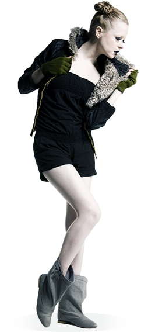

-
Built using Sequence.js
The Responsive Slider with Advanced CSS3 Transitions

-
Creative Control
Create unique sliders using CSS3 transitions
 -
Cutting Edge
Supports modern browsers, old browsers (IE7+), touch devices and responsive designs